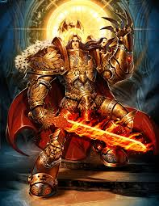

"It is the 41st Millennium. For more than a hundred centuries the Emperor of Mankind has sat immobile on the Golden Throne of Earth. He is the master of mankind by the will of the gods and master of a million worlds by the might of His inexhaustible armies. He is a rotting carcass writhing invisibly with power from the Dark Age of Technology. He is the Carrion Lord of the vast Imperium of Man for whom a thousand souls are sacrificed every day so that He may never truly die.
Yet even in His deathless state, the Emperor continues His eternal vigilance. Mighty battlefleets cross the daemon-infested miasma of the Warp, the only route between distant stars, their way lit by the Astronomican, the psychic manifestation of the Emperor's will. Vast armies give battle in His name on uncounted worlds. Greatest amongst His soldiers are the Adeptus Astartes, the Space Marines, bio-engineered super-warriors. Their comrades in arms are legion: the Imperial Guard and countless planetary defence forces, the ever-vigilant Inquisition and the Tech-priests of the Adeptus Mechanicus to name only a few. But for all their multitudes, they are barely enough to hold off the ever-present threat to humanity from aliens, heretics, mutants -- and far, far worse.
To be a man in such times is to be one amongst untold billions. It is to live in the cruelest and most bloody regime imaginable. These are the tales of those times. Forget the power of technology and science, for so much has been forgotten, never to be relearned. Forget the promise of progress and understanding, for in the grim dark future there is only war. There is no peace amongst the stars, only an eternity of carnage and slaughter, and the laughter of thirsting gods."